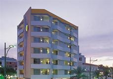
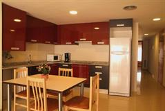
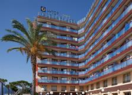
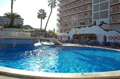
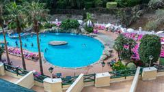
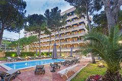

Головна
Тури
Послуги
Про нас
Контакти
Be Smart Florida Plaza
Хіт продажів в Пуерто-де-ла-Крю! Апартаменти Be Smart Florida Plaza розташовані в центрі міста Пуерто-де-ла-Крус, на острові Тенеріфе. До послуг гостей цього чарівного комплексу апартаментів відкритий басейн. Гостям пропонується розміщення в просторих апартаментах з прекрасно обладнаної кухнею, ванною кімнатою і вітальні зоною з телевізором з супутниковими каналами. Wi-Fi можна скористатися в місцях загального користування комплексу (за додаткову плату). За запитом на стійці реєстрації гостям нададуть фен.
Ціна: $1000

Apartamentos Sun & Moon 2LL
Льорет-де-Мар - зупиніться в самому центрі - До пляжу можна дійти всього за 5 хвилин. Апартаменти Xaine Sun розташовані всього в 200 метрах від пляжу, в центральному районі міста Льорет-де-Мар. У всіх апартаментах і номерах-студіо встановлений кондиціонер і підключено опалення. Поруч з будівлею є приватна парковка, місця за якою можна забронювати по приїзді. Стягується додаткова плата. Всі світлі апартаменти і номери-студіо оформлені в сучасному стилі і оснащені телевізором з супутниковими каналами
Ціна: $1000

Neptuno Apartamentos
Одне з наших найпопулярніших помешкань у місті Калелья.
Ціна: $1000

H·top Calella Palace
До пляжу можна дійти всього за 7 хвилин. До послуг гостей спа-готелю H Top Calella Palace криті та відкриті басейни, гідромасажна ванна і тераса для засмаги на даху. Цей сучасний готель знаходиться в 600 метрах від пляжу Калельа, на каталонському узбережжі Коста-дель-Маресме. Світлі номери готелю Calella Palace оснащені кондиціонером і телевізором з супутниковими каналами, а також виходять на балкон. У кожному з них облаштована власна ванна кімната з феном. У ресторані готелю H Top Calella подають страви місцевої та інтернаціональної кухні в форматі «шведський стіл».
Ціна: $1000

H.TOP OLYMPIC HOTEL
До пляжу можна дійти всього за 7 хвилин. Готель H TOP Olympic розташований в 300 метрах від пляжу Калельа. До послуг гостей 3 відкриті басейни для дорослих і дітей. Всі номери оснащені кондиціонером і телевізором з супутниковими каналами, а також виходять на балкон або терасу. В готелі H TOP Olympic 6 днів в тиждень організовують безкоштовні заходи для дітей у віці до 12 років. У числі зручностей невеликий дитячий басейн та ігровий майданчик. У ресторані подають страви каталонської, іспанської та інтернаціональної кухні в форматі «шведський стіл».
Ціна: $1000

BLUE SEA COSTA JARDIN & SPA
Спа-готель Blue Sea Costa Jardin розташований серед тропічних садів, за 1 км від пляжів Пуерто-де-ла-Круз. До послуг гостей спа-центр, відкритий басейн та номери з балконом. У готелі Blue Sea Costa Jardin пропонують світлі номери з кондиціонером, телевізором з супутниковим телебаченням та міні-баром. Усі номери облаштовані повністю обладнаною ванною кімнатою. У ресторані "El Drago" з обслуговуванням за системою "шведський стіл" пропонують страви середземноморської кухні. З бару біля басейну відкривається вид на мальовничу територію готелю. У спа-центрі є гідромасажна ванна, сауна, масажний кабінет, а також тренажерний зал. До центру Пуерто-де-ла-Крус можна дійти приблизно за 5 хвилин.
Ціна: $1000

Playa Park
Салоу - зупиніться в самому центрі - Цей добре обладнаний курортний готель з прекрасними зручностями розташований в тихому районі, всього в 100 метрах від пляжу і в 400 метрах від жвавого центру туристичної столиці регіону Коста-Дорада, Салоу. В готелі 4R Playa Park пропонуються денні та вечірні розваги для дітей і дорослих (мюзикли, ігри, фламенко і інші шоу). Тут кожен знайде заняття до смаку. У вашому розпорядженні велика тераса для прийняття сонячних ванн, 2 плавальних басейни (1 для дорослих і 1 для дітей), зона доступу в Інтернет, міні-клуб, поле для міні-гольфу та дитячий ігровий майданчик.
Ціна: $1000